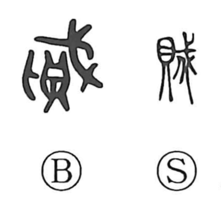

賊

Kun: | On: zoku
robber ・ bandit ・ rebel ・ to harm ・ to injure
Explanation
Shirakawa explains 賊 as a compound of 鼎, the bronze tripod on which solemn covenants were engraved, and 戎, “arms,” which itself combines a pike (戈) and a shield (干) to signify weaponry and war. In ancient practice, to gouge out, erase, or deface the inscriptions on a tripod with weapons was to violate the vow. From this image, 賊 comes to mean harming or breaking what should be kept, and by extension an offender or scoundrel. In the same vein, 盗 evokes betrayal of a blood oath, so 盗賊 originally referred to one who violates sacred pledges—a criminal against society—before later narrowing to the sense of a robber.